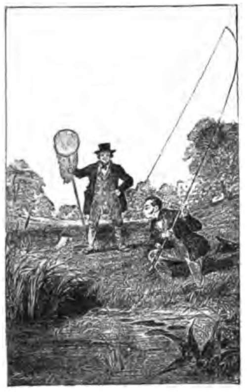
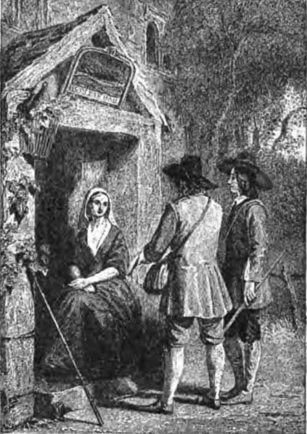

Chapter VIII. Fishing For Pike: History And Habits
Description
This section is from the book "Fishing", by Horace G. Hutchinson. Also available from Amazon: Fishing.
Chapter VIII. Fishing For Pike: History And Habits
Pike are monogamous; the males and females "pair" in January or early February, so that, during these months and March, when one is caught the other may often be captured. The females spawn in March or early in April, depositing from 50,000, to 500,000 eggs by a 30-lb. fish, on submerged sedges and subaqueous weeds, in shallow, quiet waters, and ditches connected with the river or lake; the eggs, which are small, hatch out in from eighteen to twenty days. The growth-rate of pike varies according to the conditions of food. If food be plentiful, and consist of young carp, roach, dace, etc, pike increase rapidly in weight and size. Ichthyologists differ as to the growth of pike, variously estimating it at from I to 5 lbs. a year. Mr. H. C. Pennell, one of the best living authorities, says: "It largely depends upon the nature of the water and supply of food, but that in open waters"-not stews and lakes where there is plenty of food - " the growth seldom averages more than I lb. a year during the first two years, and from i£ to 2j lbs. a year afterwards, decreasing again after eight or nine years to about the original ratio," etc. "Piscator" (" Practical Angler," p. 240) asserts the same, and gives as an instance a pond that held store-pike of 6 or 7 lbs., that was netted after an interval of seven or eight years, when two pike were caught weighing 30 lbs. each.
A comparatively recent instance of rapid growth is mentioned by Frank Buckland in his "Natural History of British Fishes," p. 154, viz.:- "In October 1874, H.R.H. Prince Christian sent me, by Mr. Keene, the head fisherman of Windsor Park, the most splendid pike I had ever beheld, Rapley Lake, Bagshot Park (a carp and tench preserve), had not been cleaned and the water run off for seventeen years, nor 'dragged' for fifty years. Keene put in the nets and brought out a number of carp, tench, etc, and he thought from the 'jump* of something in the net, that he had captured an unusually large fish. When the net shoaled, he was delighted to find a monster pike in it. This magnificent fish (I never saw one in more perfect condition) weighed 35 lbs.; length, 3 feet 10J inches; girth, 2 feet. Mr. Keene asked me what I thought the age of the fish ? I guessed, off-hand, from twelve to fifteen years, and I was not far wrong; for, about twelve years before, Sir James Clarke's butler put six or eight jack, weighing about i£ lbs. each, into Rapley Lake. The pike (a female) contained over 43,000 eggs, consequently -in October-was forward in spawn." From the above record, this pike appears to have increased from li to 35 lbs. in twelve years. No doubt, the quality and quantity of the carp in this pike's "larder" enabled her to grow large and lusty in so short a time; for, of course, she would not touch the tench, if Izaac Walton was correct in asserting that "the pike forbears to devour the tench, be he never so hungry." There exists a fond belief that the pike will not molest tench, because they are the pike's " physicians ":- " The pike, fell tyrant of the liquid plain, With ravenous waste devours his fellow-train$ Yet, howsoe'er by raging famine pined, The tench he spares-a medicinal kind ; For, when by wounds distrest or sore disease, He courts the salutary fish for ease, Close to his scales the kind physician glides, And sweats a healing balsam from his sides."
Camden, in his "Britannia," published 1586, asserts "that he has seen the bellies of pikes which had been rent open, have their gaping wounds presently closed by the touch of the tench, and by his glutinous slime perfectly healed up." Whether sometimes, as a matter of taste, pike decline to eat tench, is, I think, an open question. I say sometimes, because the late Mr. J. Knechtli caught in the "Kingsfleet," Suffolk, in 1881, three pike, from 19 lbs. to 20 lbs. each, which were preserved and "set-up" by S. Sanders, taxidermist, who sent me the contents of their stomachs, which consisted of partly digested tench, the heads, tails, and vertebrae showing that some had been, when alive, fish from 2 lbs. to 3 lbs. weight.
1 Moses Brown, "Piscatorial Eclogues" (1729).
The first authentic record of pike-fishing in this country is to be found in the " Boke [book] of St. Albans," written in a.d. 1496, by Dame Juliana Berners, Prioress of Sopwell, near St. Albans Abbey, Hertfordshire.
After an interval of nearly a century, Leonard Mascall, in 1590, published his 11 Booke of Fishing with Hooke and Line." Samuel Gardiner, D.D., published a "Booke of Angling or Fishing," in 1606. " Barker's Delight,"-" wherein are discovered many rare secrets necessary to the Art of Angling" appeared in 1651, i.e. two years before the first edition of Izaac Walton's " Compleat Angler."
Theophilus Franck, who about this time, 1658, wrote a book on " Fish and Fishing," speaks thus- epigrammatically-of pike:- " The pike, or lucit, is a mercenary, Or anglers seem among themselves to vary; He loves no streams, but hugs the silent deeps, And eats all hours, and yet no house he keeps."
This is a very accurate description of the habits of Esox luciusy whose favourite haunts are in deep pools and quiet eddies.
The voracity of pike is proverbial; when hungered they will gorge almost anything - rats, puppies, kittens, ducks, and even fish of their own kind are often found inside them. I have known two instances of swans, that were feeding on sub-aquatic weeds, having their heads and necks seized and gorged by large pike, and the fish being unable to disgorge, both pike and swans were found choked and dead. The Angler Naturalist a few years ago recorded the following circumstance, which occurred to Mr. L-, of Chippenham, Wiltshire :-" He had set a ' trimmer ' in the river Avon over-night, and on proceeding the next morning to take it up, he found a heavy pike apparently fast upon his hooks. In order to extract them he was obliged to open the fish, and in doing so perceived another pike of considerable size inside the first, from the mouth of which the line proceeded. This fish it was also found necessary to open, when a third pike of about £ lb. weight, and already partly digested, was discovered in the stomach of the second. This last fish was, of course, the original taker of the bait, having been itself subsequently pouched by a later comer, to be in its turn also afterwards seized and gorged." In The Field of December i, 1900, was the following report:- " Mr. Quelch, of Oxford, while 'spinning,' caught a jack which, leaving out of consideration the contents of its stomach, weighed 5½ lbs. On his way home, when showing the jack to the landlord of an inn, some small fish were seen in its mouth, and thirty-two were shaken out. In Oxford, on telling some friends of the incident, and finding them incredulous, he produced the pike, expecting to find two or three more 'small fish' in it, and thirty more were squeezed out. Ultimately, to ascertain the exact limit of the fish's appetite, the pike was opened, and sixty more ' fry' were found, bringing up the total to a hundred and twenty-two fish."
Another characteristic of pike is their pugnacity, for where a large one has taken up its haunt and feeding-quarters, it seldom, if ever, tolerates a smaller-unless the fish have "paired"-as an interloper, but will attack and try to drive the smaller pike away.
To give an instance of this. In February 1879 I was fishing the river Frome, Dorsetshire, and caught a 15-lb. pike at the entrance to a favourite backwater, and on landing the fish found it was bitten and scored on its back and sides by the teeth of a much larger pike, which had resented, no doubt, the intrusion into its cruising-ground. Commencing early next day some distance up-stream, I fished carefully down until I reached the mouth of the " backwater," where my live-bait (a dace) was taken, and I struck a large and powerful fish which, after twenty minutes' capital sport, I gaffed and landed; it weighed 23 lbs., was in splendid condition, and, no doubt, the one that had bitten my pike of the previous afternoon.
When fishing Loch Tay in 1870, Mr. Cramp saw two pike struggling together; the head of one was fixed within the jaws of the other, and inserted as far up as the pectoral fins. Mr. Cramp's boatman gaffed both pike through their heads, and (undivided in death) they were sent to Mr. Frank Buckland, who made a cast of them for his fish museum. The two fish weighed 19 lbs. A well-known angler has said: " The pike is a systematic and professional marauder, he respects not his own kith and kin, he prowls up and down seeking what he may devour, and he has no claim upon our consideration, except as a furnisher of sport." Nevertheless the pike ranks high in the estimation of anglers as a game and sport-giving fish, for when hooked, perhaps merely " lipped," and feeling only the " restraint of the tether," he fights pluckily for liberty and life, and, being no mean antagonist, when he does escape, deserves his liberty.

Continue to:
- prev: Chapter VII. Fishing For Pike: The Quarry
- Table of Contents
- next: Chapter IX. Fishing For Pike: Fables And Records